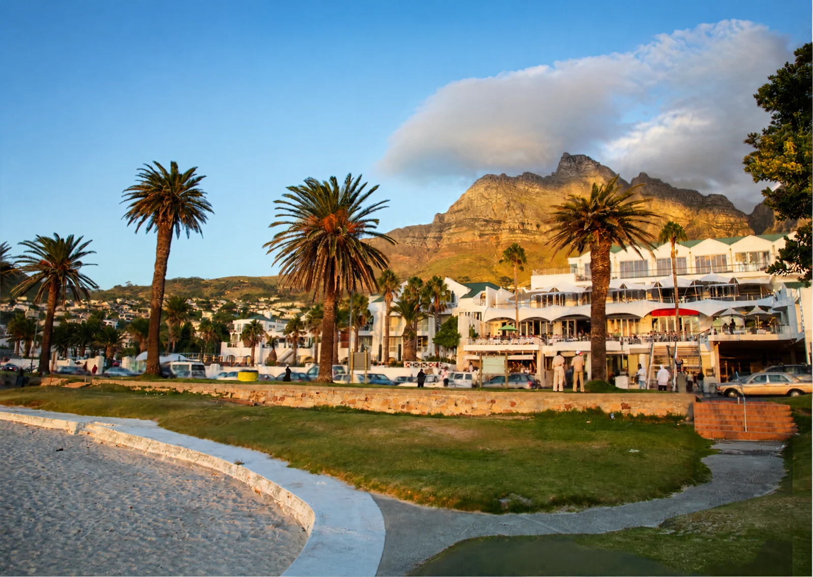
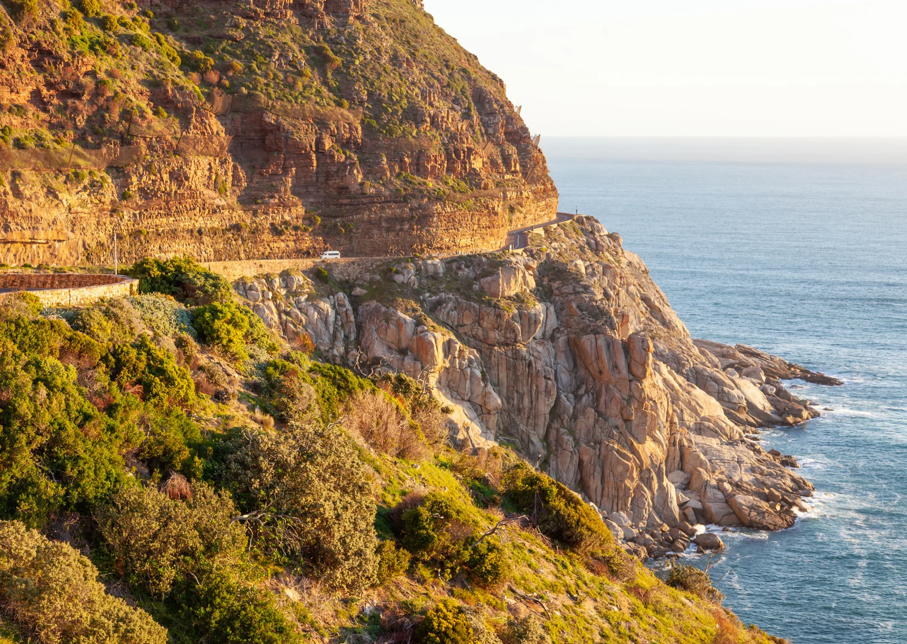
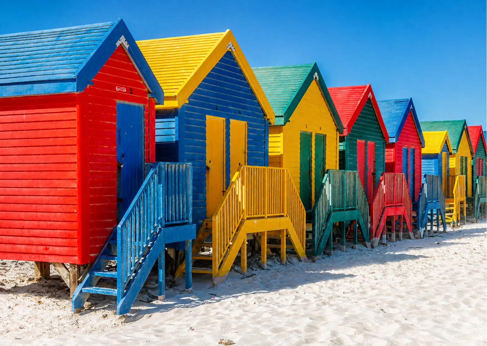
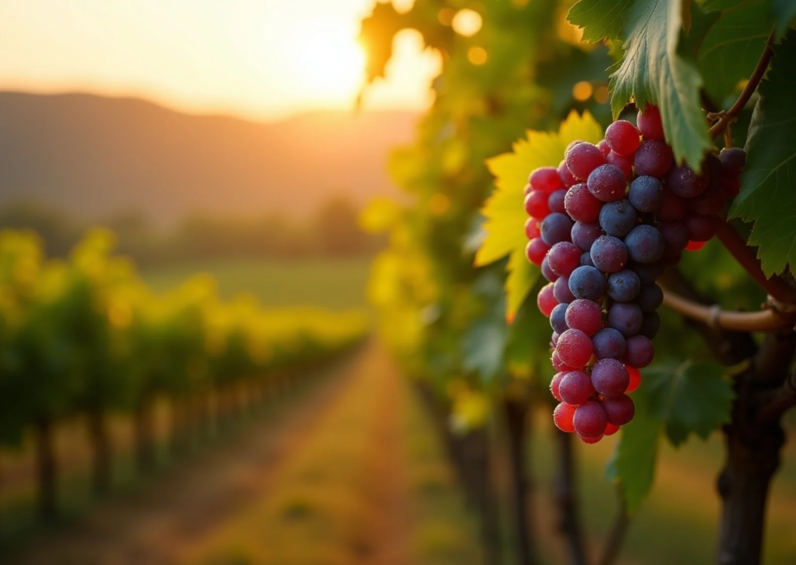
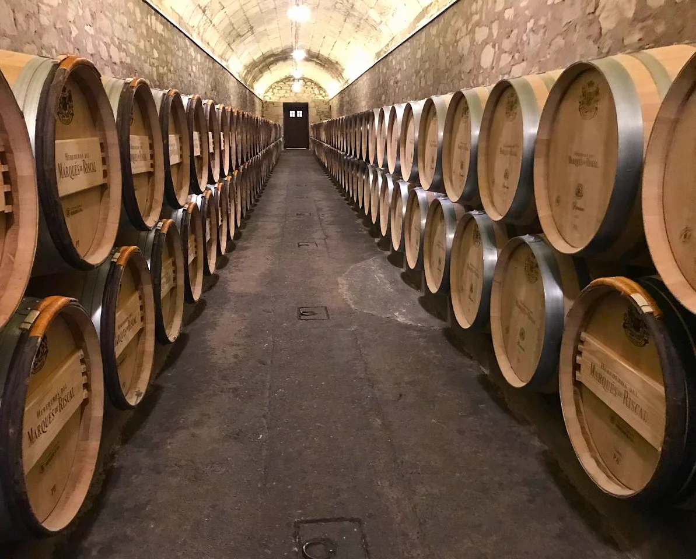
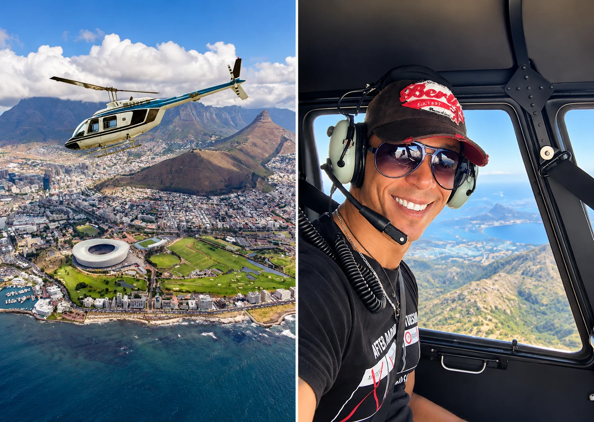

Table Mountain
Ride the rotating cableway to the top of one of the New7Wonders of Nature for sweeping views over the city, Table Bay and the Atlantic. We'll time your visit around the weather for the clearest views.
Cape Town has more than a lifetime's worth of exploring. Let us know what catches your eye and we'll arrange the transfers, guides and bookings in advance — so all you have to do is enjoy the day.
The sights that put Cape Town on the map — best enjoyed with an early start and a good guide.
Ride the rotating cableway to the top of one of the New7Wonders of Nature for sweeping views over the city, Table Bay and the Atlantic. We'll time your visit around the weather for the clearest views.
A dramatic scenic drive to the southwestern tip of the peninsula, with rugged cliffs, wild fynbos, roaming ostriches and the historic lighthouse at the point.
Cape Town's harbourside hub for shopping, seafood and sundowners, with views across to Robben Island and Table Mountain from the water's edge.
Wander the cobbled streets of this historic Cape Malay neighbourhood, known for its brightly coloured houses, cobblestones and rich culinary heritage.
A short ferry from the Waterfront to the island where Nelson Mandela was imprisoned, now a UNESCO World Heritage Site with guided tours led by former political prisoners.
A leafy city-centre garden dating back to 1652, and a moving museum telling the story of a community uprooted by forced removals during apartheid.
From penguins to proteas, Cape Town's natural surrounds are just as memorable as its skyline.
A protected colony of African penguins waddling along a beautiful beach in Simon's Town — one of the only places in the world to see penguins up close in the wild.
World-renowned gardens set against the eastern slopes of Table Mountain, home to South Africa's unique fynbos and the famous Boomslang canopy walkway.
A popular sunrise or full-moon hike up Lion's Head, or an easy scenic drive up Signal Hill — both offering some of the best panoramic views in the city.
Between June and December, Southern Right whales come remarkably close to shore along the Hermanus coastline — one of the best land-based whale watching spots on earth.
A day trip or overnight safari to a nearby game reserve, where expert guides help you track lion, elephant, rhino, buffalo and leopard.
For the adventurous, an unforgettable face-to-face encounter with great white sharks in their natural habitat, arranged with trusted local operators.
Cape Town's coastline is as varied as it is beautiful, from surf beaches to cliffside drives.

Palm-lined promenades, white sand and the dramatic backdrop of the Twelve Apostles — perfect for a sundowner or a lazy beach afternoon.

One of the most spectacular coastal drives in the world, carved into the cliffs between Hout Bay and Noordhoek, with a toll and endless photo stops.

Cape Town's colourful surf capital, with warmer False Bay waters, beginner-friendly waves and the iconic row of Victorian bathing huts.
Full-day escapes for wine lovers, history buffs and anyone wanting to see more of the Western Cape.

The heart of the Cape Winelands — historic oak-lined towns surrounded by award-winning estates, offering tastings, cellar tours and exceptional food.

South Africa's oldest wine-producing region, just twenty minutes from the city, home to historic estates like Groot Constantia.

See it all from above — Table Mountain, the Atlantic Seaboard and the peninsula from a private helicopter flight, arranged for special occasions or simply the best view in town.
Tell us what interests you and we'll arrange transfers, guides and bookings ahead of your arrival.
Get In Touch